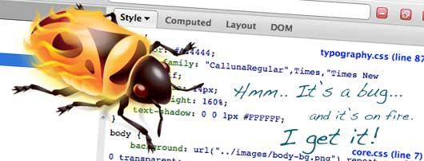

آموزش رایگان کامل و پیشرفته فایرباگ و سایر ابزارهای مهم
فایرباگ مهم ترین و مفید ترین ابزار برای طراحی واسط کاربری تحت وب می باشد. در این دوره ی آموزشی، کلیه ی ویژگی های فایرباگ را با دقت زیاد و به صورت کاربردی فرا میگیرید و مهارت های طراحی وب خود را به صورت چشمگیری ارتقا می دهید.

متاسفانه بسیاری از کسانی که طراحی وب را شروع میکنند با فایرباگ آشنایی ندارند. و حتی کسانی که طراحی وب را به صورت حرفه ای دنبال میکنند، بعضا با فایرباگ آشنایی کامل ندارند و از قابلیت های آن استفاده نمی کنند.
در حالی که استفاده از فایرباگ، بسیار مهم و ضروری است و سرعت برنامه نویسی و توسعه ی UI وب را حتی ده برابر افزایش میدهد. لذا به کلیه ی کسانی که به طراحی UI وب علاقه مند هستند، مشاهده ی این دوره ی آموزشی را اکیدا توصیه میکنم. به هیچ وجه این دوره را از دست ندهید.
با مشاهده ی این دوره چه مهارت هایی به دست می آورید؟
با مشاهده ی این دوره شما درک عمیقی از ساختار صفحات وب به دست می آورید و توانایی و مهارت تان را در طراحی UI وب افزایش می دهید. شما با گذراندن این دوره قادر خواهید شد که هر نوع طراحی را به دقت پیاده سازی کنید. هر صفحه ی وب که ببینید را می توانید دقیقا الگو برداری و شبیه سازی کنید.
در این دوره، کلیه ی قابلیت های فایرباگ به صورت دقیق و با جزییات مورد بررسی قرار میگیرند:
- چگونگی حرکت در صفحه ی وب و انتخاب عناصر
- چگونگی اعمال تغییر در صفحات وب و کدهای CSS به صورت زنده و آنی
- ردگیری استایل های CSS در صفحات وب پیچیده
- کپی کردن و الگوبرداری از صفحات وب و درک عمیق از ساختار صفحات وب
- اجرای کدهای جاوا اسکریپت به صورت زنده در صفحات وب
- دیباگ و اشکال زدایی کدهای جاوا اسکریپت
- اشکال زدایی کدهای CSS به صورت زنده
- مهارت در نوشتن انتخابگر های CSS به صورت بهینه و سریع
- اشکال زدایی مشکلات شبکه و اینترنت در صفحات وب
- ردگیری خطاهای Ajax
- ردگیری و مدیریت کوکی ها
- بررسی عمیق درخت DOM
- و بسیاری موارد دیگر.
همچنین در قسمت های بعدی این دوره، شما با سایر ابزار های ضروری طراحی وب از قبیل WebStorm و Emmet و… آشنا خواهید شد.
سرفصل های موجود (در حال به روز رسانی)
توجه: سرفصل های زیر در حال به روز رسانی است و در آینده به زودی قسمت های جدید اضافه می گردد.
آموزش های رایگان
توجه: آموزش های زیر، برای کلیه ی اعضای سایت طلوع رایگان می باشد.
- بخش اول: معرفی دوره (یک قسمت)
- بخش دوم: شروع کار با فایرباگ (سه قسمت)
- بخش سوم: کار با پنل HTML (شش قسمت)
- بخش چهارم - کار با پنل HTML (ادامه بخش سوم) (دو قسمت)
- بخش پنجم - کار با پنل HTML (ادامه بخش چهارم) (سه قسمت)
- بخش ششم - پروژه ی عملی با فایرباگ از صفر تا صد (یک قسمت)
- بخش هفتم - پروژه ی عملی با فایرباگ از صفر تا صد (ادامه بخش ششم) (دو قسمت)
آموزش های پیشرفته
- بخش هشتم - کار با پنل CSS (یک قسمت)
- بخش نهم - مبانی پروتکل HTTP و پنل Net (یک قسمت)
- بخش دهم - کار با پنل Net (ادامه بخش نهم) (چهار قسمت)
- بخش یازدهم - کار با پنل Cookies (یک قسمت)
- بخش دوازدهم - کار با پنل Console (سه قسمت)
- بخش سیزدهم - کار با پنل Console (ادامه بخش دوازدهم) (چهار قسمت)
- بخش چهاردهم - کار با پنل DOM (دو قسمت)
- بخش پانزدهم - کار با پنل Script - دیباگ و اجرای خط به خط کدهای جاوا اسکریپت در قالب پروژه (یک قسمت)
- بخش شانزدهم - دومین پروژه: پیاده سازی گام به گام یک پروژه ساعت StopWatch با جاوا اسکریپت و فایرباگ (شش قسمت)
- دوره های جدید به زودی اضافه می شود…
نظرات شما
قسمت نظرات با استفاده از سرویس دیسکاس پیاده سازی شده است. متأسفانه این سرویس از داخل ایران قابل دسترس نیست. لطفا از آی پی خارجی استفاده کنید.